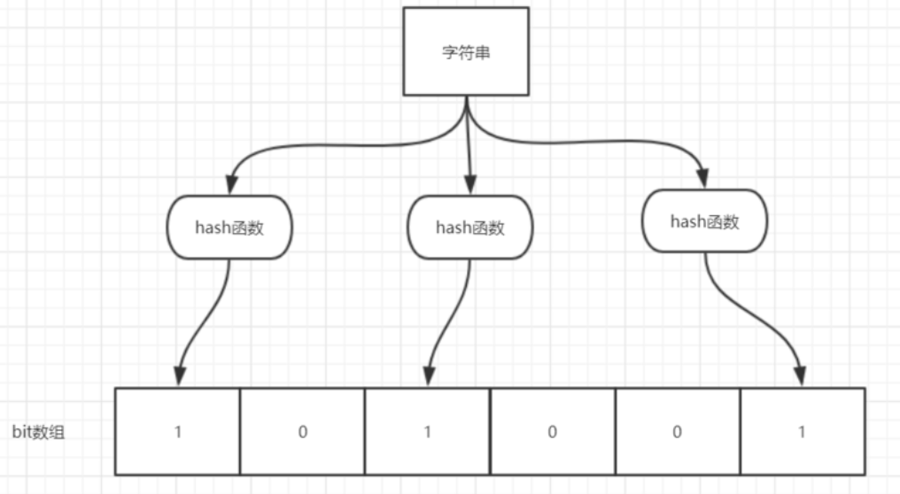

布隆过滤器什么是布隆过滤器？原理介绍布隆过滤器使用场景Guava 布隆过滤器Redis 中的布隆过滤器介绍使用 Docker 安装第一步：搜索第二步：拉取镜像第三步：查看镜像是否拉取成功第四步：运行第五步：查看是否运行成功第六步：进入容器第七步：使用redis-cli链接redis常用命令BF.ADDBF.MADDBF.EXISTSBF.MEXISTSBF. RESERVEJava操作Redis布隆过滤器RedisInformation类定义接口RedisBloomFilter实现接口单元测试测试误差
布隆过滤器
什么是布隆过滤器？
布隆过滤器（Bloom Filter）是一个叫做 Bloom 的老哥于 1970 年提出的。我们可以把它看作由二进制向量（或者说位数组）和一系列随机映射函数（哈希函数）两部分组成的数据结构。相比于我们平时常用的的 List、Map 、Set 等数据结构，它占用空间更少并且效率更高，但是缺点是其返回的结果是概率性的，而不是非常准确的。理论情况下添加到集合中的元素越多，误报的可能性就越大。并且，存放在布隆过滤器的数据不容易删除。

位数组中的每个元素都只占用 1 bit ，并且每个元素只能是 0 或者 1。这样申请一个 100w 个元素的位数组只占用 1000000Bit / 8 = 125000 Byte = 125000/1024 kb ≈ 122kb 的空间。
总结：一个名叫 Bloom 的人提出了一种来检索元素是否在给定大集合中的数据结构，这种数据结构是高效且性能很好的，但缺点是具有一定的错误识别率和删除难度。并且，理论情况下，添加到集合中的元素越多，误报的可能性就越大。
原理介绍
当一个元素加入布隆过滤器中的时候，会进行如下操作：
- 使用布隆过滤器中的哈希函数对元素值进行计算，得到哈希值（有几个哈希函数得到几个哈希值）。
- 根据得到的哈希值，在位数组中把对应下标的值置为 1。
当我们需要判断一个元素是否存在于布隆过滤器的时候，会进行如下操作：
- 对给定元素再次进行相同的哈希计算；
- 得到值之后判断位数组中的每个元素是否都为 1，如果值都为 1，那么说明这个值在布隆过滤器中，如果存在一个值不为 1，说明该元素不在布隆过滤器中。

当字符串存储要加入到布隆过滤器中时，该字符串首先由多个哈希函数生成不同的哈希值，然后将对应的位数组的下标设置为 1（当位数组初始化时，所有位置均为 0）。当第二次存储相同字符串时，因为先前的对应位置已设置为 1，所以很容易知道此值已经存在（去重非常方便）。
如果我们需要判断某个字符串是否在布隆过滤器中时，只需要对给定字符串再次进行相同的哈希计算，得到值之后判断位数组中的每个元素是否都为 1，如果值都为 1，那么说明这个值在布隆过滤器中，如果存在一个值不为 1，说明该元素不在布隆过滤器中。
不同的字符串可能哈希出来的位置相同，这种情况我们可以适当增加位数组大小或者调整我们的哈希函数。
综上，我们可以得出：布隆过滤器说某个元素存在，小概率会误判。布隆过滤器说某个元素不在，那么这个元素一定不在。
布隆过滤器使用场景
- 判断给定数据是否存在：比如判断一个数字是否存在于包含大量数字的数字集中（数字集很大，5 亿以上！）、 防止缓存穿透（判断请求的数据是否有效避免直接绕过缓存请求数据库）等等、邮箱的垃圾邮件过滤、黑名单功能等等。
- 去重：比如爬给定网址的时候对已经爬取过的 URL 去重。
Guava 布隆过滤器
引入 Guava 的依赖：
xxxxxxxxxx51 <dependency>2 <groupId>com.google.guava</groupId>3 <artifactId>guava</artifactId>4 <version>28.0-jre</version>5 </dependency>
xxxxxxxxxx431package mao;2
3import com.google.common.hash.BloomFilter;4import com.google.common.hash.Funnels;5
6/**7 * Project name(项目名称)：布隆过滤器8 * Package(包名): mao9 * Class(类名): GuavaBloomFilter10 * Author(作者）: mao11 * Author QQ：129619324512 * GitHub：https://github.com/maomao124/13 * Date(创建日期)： 2023/2/2714 * Time(创建时间)： 20:0115 * Version(版本): 1.016 * Description(描述)： 无17 */18
19public class GuavaBloomFilter20{21 public static void main(String[] args)22 {23 //布隆过滤器对象，创建最多存放最多2000个整数的布隆过滤器，误判率为0.0124 BloomFilter<Integer> bloomFilter = BloomFilter.create(25 Funnels.integerFunnel(), 2000, 0.01);26
27 //判断是否存在28 System.out.println(bloomFilter.mightContain(100));29 System.out.println(bloomFilter.mightContain(101));30 System.out.println(bloomFilter.mightContain(102));31
32 //设置值33 bloomFilter.put(100);34 bloomFilter.put(101);35 bloomFilter.put(102);36
37 //判断是否存在38 System.out.println(bloomFilter.mightContain(100));39 System.out.println(bloomFilter.mightContain(101));40 System.out.println(bloomFilter.mightContain(102));41 System.out.println(bloomFilter.mightContain(103));42 }43}
运行结果：
xxxxxxxxxx71false2false3false4true5true6true7false
xxxxxxxxxx1261package mao;2
3import com.google.common.hash.BloomFilter;4import com.google.common.hash.Funnels;5
6/**7 * Project name(项目名称)：布隆过滤器8 * Package(包名): mao9 * Class(类名): GuavaBloomFilter210 * Author(作者）: mao11 * Author QQ：129619324512 * GitHub：https://github.com/maomao124/13 * Date(创建日期)： 2023/2/2714 * Time(创建时间)： 20:1215 * Version(版本): 1.016 * Description(描述)： 测试布隆过滤器误差17 */18
19public class GuavaBloomFilter220{21 public static void main(String[] args)22 {23 testGuavaBloomFilter(10000, 0.01);24 testGuavaBloomFilter(10000, 0.02);25 testGuavaBloomFilter(10000, 0.05);26 testGuavaBloomFilter(10000, 0.1);27 testGuavaBloomFilter(10000, 0.5);28
29 System.out.println("------");30 testGuavaBloomFilter(3000, 0.01);31 testGuavaBloomFilter(3000, 0.02);32 testGuavaBloomFilter(3000, 0.05);33 testGuavaBloomFilter(3000, 0.1);34 testGuavaBloomFilter(3000, 0.5);35
36 System.out.println("------");37 testGuavaBloomFilter(2000, 0.01);38 testGuavaBloomFilter(2000, 0.02);39 testGuavaBloomFilter(2000, 0.05);40 testGuavaBloomFilter(2000, 0.1);41 testGuavaBloomFilter(2000, 0.5);42
43 System.out.println("------");44 testGuavaBloomFilter(1000, 0.01);45 testGuavaBloomFilter(1000, 0.02);46 testGuavaBloomFilter(1000, 0.05);47 testGuavaBloomFilter(1000, 0.1);48 testGuavaBloomFilter(1000, 0.5);49 testGuavaBloomFilter(1000, 0.005);50 testGuavaBloomFilter(1000, 0.001);51 testGuavaBloomFilter(1000, 0.0001);52
53 System.out.println("------");54 testGuavaBloomFilter(500, 0.01);55 testGuavaBloomFilter(500, 0.02);56 testGuavaBloomFilter(500, 0.05);57 testGuavaBloomFilter(500, 0.1);58 testGuavaBloomFilter(500, 0.5);59 testGuavaBloomFilter(500, 0.005);60 testGuavaBloomFilter(500, 0.001);61 testGuavaBloomFilter(500, 0.0001);62
63 System.out.println("------");64 testGuavaBloomFilter(200, 0.01);65 testGuavaBloomFilter(200, 0.02);66 testGuavaBloomFilter(200, 0.05);67 testGuavaBloomFilter(200, 0.1);68 testGuavaBloomFilter(200, 0.5);69 testGuavaBloomFilter(200, 0.005);70 testGuavaBloomFilter(200, 0.001);71 testGuavaBloomFilter(200, 0.0001);72
73 System.out.println("------");74 testGuavaBloomFilter(100, 0.01);75 testGuavaBloomFilter(100, 0.02);76 testGuavaBloomFilter(100, 0.05);77 testGuavaBloomFilter(100, 0.1);78 testGuavaBloomFilter(100, 0.5);79 testGuavaBloomFilter(100, 0.005);80 testGuavaBloomFilter(100, 0.001);81 testGuavaBloomFilter(100, 0.0001);82 }83
84
85 /**86 * 测试Guava的布隆过滤器87 *88 * @param expectedInsertions 布隆过滤器最多存放的数量89 * @param fpp 误差90 */91 public static void testGuavaBloomFilter(int expectedInsertions, double fpp)92 {93 //布隆过滤器对象，创建最多存放最多2000个整数的布隆过滤器，误判率为0.0194 BloomFilter<Integer> bloomFilter = BloomFilter.create(95 Funnels.integerFunnel(), expectedInsertions, fpp);96
97 //1500次循环98 for (int i = 0; i < 1500; i++)99 {100 if (i % 3 == 0)101 {102 continue;103 }104 //将i的值% 3 不等于 0 的值放进去105 bloomFilter.put(i);106 }107
108 //存在的计数109 int count = 0;110 //统计111 for (int i = 0; i < 1500; i++)112 {113 //判断是否存在114 boolean b = bloomFilter.mightContain(i);115 //System.out.println(i + " --> " + b);116 //可能存在117 if (b)118 {119 count++;120 }121 }122 System.out.println("最大数量：" + expectedInsertions + " 误差：" + fpp);123 System.out.println("预期结果：1000，最终结果：" + count);124 System.out.println();125 }126}
运行结果：
xxxxxxxxxx1461最大数量：10000 误差：0.012预期结果：1000，最终结果：10003
4最大数量：10000 误差：0.025预期结果：1000，最终结果：10006
7最大数量：10000 误差：0.058预期结果：1000，最终结果：10009
10最大数量：10000 误差：0.111预期结果：1000，最终结果：100012
13最大数量：10000 误差：0.514预期结果：1000，最终结果：103015
16------17最大数量：3000 误差：0.0118预期结果：1000，最终结果：100019
20最大数量：3000 误差：0.0221预期结果：1000，最终结果：100022
23最大数量：3000 误差：0.0524预期结果：1000，最终结果：100125
26最大数量：3000 误差：0.127预期结果：1000，最终结果：100128
29最大数量：3000 误差：0.530预期结果：1000，最终结果：109531
32------33最大数量：2000 误差：0.0134预期结果：1000，最终结果：100035
36最大数量：2000 误差：0.0237预期结果：1000，最终结果：100038
39最大数量：2000 误差：0.0540预期结果：1000，最终结果：100241
42最大数量：2000 误差：0.143预期结果：1000，最终结果：101344
45最大数量：2000 误差：0.546预期结果：1000，最终结果：113747
48------49最大数量：1000 误差：0.0150预期结果：1000，最终结果：100651
52最大数量：1000 误差：0.0253预期结果：1000，最终结果：101154
55最大数量：1000 误差：0.0556预期结果：1000，最终结果：102157
58最大数量：1000 误差：0.159预期结果：1000，最终结果：105360
61最大数量：1000 误差：0.562预期结果：1000，最终结果：123063
64最大数量：1000 误差：0.00565预期结果：1000，最终结果：100066
67最大数量：1000 误差：0.00168预期结果：1000，最终结果：100169
70最大数量：1000 误差：1.0E-471预期结果：1000，最终结果：100072
73------74最大数量：500 误差：0.0175预期结果：1000，最终结果：107576
77最大数量：500 误差：0.0278预期结果：1000，最终结果：110679
80最大数量：500 误差：0.0581预期结果：1000，最终结果：112882
83最大数量：500 误差：0.184预期结果：1000，最终结果：117585
86最大数量：500 误差：0.587预期结果：1000，最终结果：137588
89最大数量：500 误差：0.00590预期结果：1000，最终结果：106091
92最大数量：500 误差：0.00193预期结果：1000，最终结果：103794
95最大数量：500 误差：1.0E-496预期结果：1000，最终结果：101197
98------99最大数量：200 误差：0.01100预期结果：1000，最终结果：1423101
102最大数量：200 误差：0.02103预期结果：1000，最终结果：1438104
105最大数量：200 误差：0.05106预期结果：1000，最终结果：1421107
108最大数量：200 误差：0.1109预期结果：1000，最终结果：1442110
111最大数量：200 误差：0.5112预期结果：1000，最终结果：1479113
114最大数量：200 误差：0.005115预期结果：1000，最终结果：1399116
117最大数量：200 误差：0.001118预期结果：1000，最终结果：1375119
120最大数量：200 误差：1.0E-4121预期结果：1000，最终结果：1293122
123------124最大数量：100 误差：0.01125预期结果：1000，最终结果：1497126
127最大数量：100 误差：0.02128预期结果：1000，最终结果：1500129
130最大数量：100 误差：0.05131预期结果：1000，最终结果：1497132
133最大数量：100 误差：0.1134预期结果：1000，最终结果：1497135
136最大数量：100 误差：0.5137预期结果：1000，最终结果：1494138
139最大数量：100 误差：0.005140预期结果：1000，最终结果：1498141
142最大数量：100 误差：0.001143预期结果：1000，最终结果：1498144
145最大数量：100 误差：1.0E-4146预期结果：1000，最终结果：1481
当 mightContain() 方法返回 true 时，我们可以 99％确定该元素在过滤器中，当过滤器返回 false 时，我们可以 100％确定该元素不存在于过滤器中。
Guava 提供的布隆过滤器的实现还是很不错的，但是它有一个重大的缺陷就是只能单机使用（另外，容量扩展也不容易），而现在互联网一般都是分布式的场景。为了解决这个问题，我们就需要用到 Redis 中的布隆过滤器了。
Redis 中的布隆过滤器
介绍
Redis v4.0 之后有了 Module（模块/插件） 功能，Redis Modules 让 Redis 可以使用外部模块扩展其功能 。布隆过滤器就是其中的 Module。
https://redis.io/resources/modules/
另外，官网推荐了一个 RedisBloom 作为 Redis 布隆过滤器的 Module，地址：https://github.com/RedisBloom/RedisBloom 其他还有：
- redis-lua-scaling-bloom-filter（lua 脚本实现）：https://github.com/erikdubbelboer/redis-lua-scaling-bloom-filter
- pyreBloom（Python 中的快速 Redis 布隆过滤器） ：https://github.com/seomoz/pyreBloom
使用 Docker 安装
库：redislabs/rebloom - Docker Image | Docker Hub
第一步：搜索
命令：docker search redislabs/rebloom
xxxxxxxxxx41PS C:\Users\mao\Desktop> docker search redislabs/rebloom2NAME DESCRIPTION STARS OFFICIAL AUTOMATED3redislabs/rebloom A probablistic datatypes module for Redis 22 [OK]4PS C:\Users\mao\Desktop>
第二步：拉取镜像
命令：docker pull redislabs/rebloom
xxxxxxxxxx181PS C:\Users\mao\Desktop> docker pull redislabs/rebloom2Using default tag: latest3latest: Pulling from redislabs/rebloom4284055322776: Pull complete5b7286e96019c: Pull complete68d789d3c47a4: Pull complete73806fdc99c73: Pull complete8e751a0826f38: Pull complete9ef5499a774c1: Pull complete10c72d4acf12b3: Pull complete1138d98e95a943: Pull complete124a50810bd519: Pull complete13209cee60b260: Pull complete14605e8f893c4b: Pull complete15Digest: sha256:182ba5c55c8b2b5758edda4682f8f7a3711efe025d593583ecf1bf3ed9b4f55e16Status: Downloaded newer image for redislabs/rebloom:latest17docker.io/redislabs/rebloom:latest18PS C:\Users\mao\Desktop>
第三步：查看镜像是否拉取成功
命令：docker images
xxxxxxxxxx41PS C:\Users\mao\Desktop> docker images2REPOSITORY TAG IMAGE ID CREATED SIZE3redislabs/rebloom latest 66d626dc1387 15 months ago 147MB4PS C:\Users\mao\Desktop>
第四步：运行
命令：docker run -p 16379:6379 -d --name redis-redisbloom redislabs/rebloom
xxxxxxxxxx31PS C:\Users\mao> docker run -p 16379:6379 -d --name redis-redisbloom redislabs/rebloom20a3197e86f21545c46e581d1b64aca3aa6a641144b9e38518fc50f8cedca19173PS C:\Users\mao>
第五步：查看是否运行成功
命令：docker ps
xxxxxxxxxx41PS C:\Users\mao> docker ps2CONTAINER ID IMAGE COMMAND CREATED STATUS PORTS NAMES30a3197e86f21 redislabs/rebloom "docker-entrypoint.s…" 14 seconds ago Up 13 seconds 0.0.0.0:16379->6379/tcp redis-redisbloom4PS C:\Users\mao>
第六步：进入容器
命令：docker exec -it redis-redisbloom /bin/bash
xxxxxxxxxx71PS C:\Users\mao> docker exec -it redis-redisbloom /bin/bash2root@0a3197e86f21:/data# ls -l3total 04root@0a3197e86f21:/data# pwd5/data6root@0a3197e86f21:/data# cd ..7root@0a3197e86f21:/#
第七步：使用redis-cli链接redis
命令：redis-cli
xxxxxxxxxx41root@0a3197e86f21:/# redis-cli2127.0.0.1:6379> ping3PONG4127.0.0.1:6379>
如果是外部机，则需要使用命令：redis-cli -p 16379
xxxxxxxxxx41PS C:\Users\mao> redis-cli -p 163792127.0.0.1:16379> ping3PONG4127.0.0.1:16379>
常用命令
key : 布隆过滤器的名称，item : 添加的元素
BF.ADD
将元素添加到布隆过滤器中，如果该过滤器尚不存在，则创建该过滤器。格式：BF.ADD {key} {item}
xxxxxxxxxx91127.0.0.1:6379> BF.ADD filter 12(integer) 13127.0.0.1:6379> BF.ADD filter 24(integer) 15127.0.0.1:6379> BF.ADD filter 36(integer) 17127.0.0.1:6379> BF.ADD filter 58(integer) 19127.0.0.1:6379>
BF.MADD
将一个或多个元素添加到“布隆过滤器”中，并创建一个尚不存在的过滤器。该命令的操作方式BF.ADD与之相同，只不过它允许多个输入并返回多个值。格式：BF.MADD
{key} {item} [item ...]
xxxxxxxxxx101127.0.0.1:6379> BF.MADD filter2 1 2 7 9 1021) (integer) 132) (integer) 143) (integer) 154) (integer) 165) (integer) 17127.0.0.1:6379> BF.MADD filter2 2 881) (integer) 092) (integer) 110127.0.0.1:6379>
BF.EXISTS
确定元素是否在布隆过滤器中存在。格式：BF.EXISTS {key} {item}
xxxxxxxxxx191127.0.0.1:6379> BF.EXISTS filter 12(integer) 13127.0.0.1:6379> BF.EXISTS filter 24(integer) 15127.0.0.1:6379> BF.EXISTS filter 36(integer) 17127.0.0.1:6379> BF.EXISTS filter 48(integer) 09127.0.0.1:6379> BF.EXISTS filter 510(integer) 111127.0.0.1:6379> BF.EXISTS filter2 512(integer) 013127.0.0.1:6379> BF.EXISTS filter2 714(integer) 115127.0.0.1:6379> BF.EXISTS filter2 816(integer) 117127.0.0.1:6379> BF.EXISTS filter2 318(integer) 019127.0.0.1:6379>
BF.MEXISTS
确定一个或者多个元素是否在布隆过滤器中存在。格式：BF.MEXISTS {key} {item} [item ...]
xxxxxxxxxx131127.0.0.1:6379> BF.MEXISTS filter 1 2 3 4 5 6 7 8 9 10 112 1) (integer) 13 2) (integer) 14 3) (integer) 15 4) (integer) 06 5) (integer) 17 6) (integer) 08 7) (integer) 09 8) (integer) 010 9) (integer) 01110) (integer) 01211) (integer) 013127.0.0.1:6379>xxxxxxxxxx131127.0.0.1:6379> BF.MEXISTS filter2 1 2 3 4 5 6 7 8 9 10 112 1) (integer) 13 2) (integer) 14 3) (integer) 05 4) (integer) 06 5) (integer) 07 6) (integer) 08 7) (integer) 19 8) (integer) 110 9) (integer) 11110) (integer) 11211) (integer) 013127.0.0.1:6379>
BF. RESERVE
命令的格式如下：
BF. RESERVE {key} {error_rate} {capacity} [EXPANSION expansion]
参数的具体含义：
- key：布隆过滤器的名称
- error_rate : 期望的误报率。该值必须介于 0 到 1 之间。例如，对于期望的误报率 0.1％（1000 中为 1），error_rate 应该设置为 0.001。该数字越接近零，则每个项目的内存消耗越大，并且每个操作的 CPU 使用率越高。
- capacity: 过滤器的容量。当实际存储的元素个数超过这个值之后，性能将开始下降。实际的降级将取决于超出限制的程度。随着过滤器元素数量呈指数增长，性能将线性下降。
可选参数：
- expansion：如果创建了一个新的子过滤器，则其大小将是当前过滤器的大小乘以
expansion。默认扩展值为 2。这意味着每个后续子过滤器将是前一个子过滤器的两倍。
xxxxxxxxxx31127.0.0.1:6379> BF.RESERVE filter3 0.001 5002OK3127.0.0.1:6379>
Java操作Redis布隆过滤器
使用RESP2.0协议来操作redis服务端
RedisInformation类
xxxxxxxxxx941package mao;2
3import java.io.InputStream;4import java.util.Properties;5
6/**7 * Project name(项目名称)：布隆过滤器8 * Package(包名): mao9 * Class(类名): RedisInformation10 * Author(作者）: mao11 * Author QQ：129619324512 * GitHub：https://github.com/maomao124/13 * Date(创建日期)： 2023/2/2714 * Time(创建时间)： 21:5915 * Version(版本): 1.016 * Description(描述)： redis服务的信息对象17 */18
19public class RedisInformation20{21
22 /**23 * redis服务的ip24 */25 private static final String host;26 /**27 * redis服务的端口号28 */29 private static final int port;30 /**31 * redis服务的密码32 */33 private static final String password;34
35 /**36 * 单行字符串37 */38 public static final char SINGLE_LINE_STRING = '+';39 /**40 * 异常或者错误41 */42 public static final char ERROR = '-';43 /**44 * 数值45 */46 public static final char NUMBER = ':';47 /**48 * 多行字符串49 */50 public static final char MULTILINE_STRING = '$';51 /**52 * 数组53 */54 public static final char ARRAY = '*';55
56
57 static58 {59 try60 {61 //从类路径里获取配置信息62 InputStream inputStream = RedisInformation.class.getClassLoader().getResourceAsStream("redis.properties");63 Properties properties = new Properties();64 //加载配置到properties65 properties.load(inputStream);66 //ip地址67 host = properties.getProperty("redis.host");68 //端口号69 port = Integer.parseInt(properties.getProperty("redis.port"));70 //密码71 password = properties.getProperty("redis.password");72 }73 catch (Exception e)74 {75 throw new RuntimeException(e);76 }77 }78
79
80 public static String getHost()81 {82 return host;83 }84
85 public static int getPort()86 {87 return port;88 }89
90 public static String getPassword()91 {92 return password;93 }94}
定义接口RedisBloomFilter
xxxxxxxxxx781package mao;2
3import java.util.List;4
5/**6 * Project name(项目名称)：布隆过滤器7 * Package(包名): mao8 * Interface(接口名): RedisBloomFilter9 * Author(作者）: mao10 * Author QQ：129619324511 * GitHub：https://github.com/maomao124/12 * Date(创建日期)： 2023/2/2713 * Time(创建时间)： 22:0514 * Version(版本): 1.015 * Description(描述)： redis布隆过滤器客户端16 */17
18public interface RedisBloomFilter19{20 /**21 * 关闭链接22 */23 void close();24
25 /**26 * 将元素添加到布隆过滤器中，如果该过滤器尚不存在，则创建该过滤器。27 *28 * @param filterKey 布隆过滤器的名称29 * @param item 添加的元素30 * @return boolean31 */32 boolean add(String filterKey, String item);33
34 /**35 * 将一个或多个元素添加到“布隆过滤器”中，并创建一个尚不存在的过滤器。36 * 该命令的操作方式`BF.ADD`与之相同，只不过它允许多个输入并返回多个值。37 *38 * @param filterKey 布隆过滤器的名称39 * @param items 添加的元素40 * @return {@link List}<{@link Boolean}>41 */42 List<Boolean> mAdd(String filterKey, String... items);43
44
45 /**46 * 确定元素是否在布隆过滤器中存在47 *48 * @param filterKey 布隆过滤器的名称49 * @param item 添加的元素50 * @return boolean 如果存在，则为true，反之为false51 */52 boolean exists(String filterKey, String item);53
54
55 /**56 * 确定一个或者多个元素是否在布隆过滤器中存在57 * 该命令的操作方式`BF.EXISTS`与之相同，只不过它允许多个输入并返回多个值。58 *59 * @param filterKey 布隆过滤器的名称60 * @param items 添加的元素61 * @return {@link List}<{@link Boolean}>62 */63 List<Boolean> mExists(String filterKey, String... items);64
65
66 /**67 * 储备68 *69 * @param filterKey 布隆过滤器的名称70 * @param error_rate 期望的误报率。该值必须介于 0 到 1 之间。例如，对于期望的误报率 0.1％（1000 中为 1），71 * error_rate 应该设置为 0.001。72 * 该数字越接近零，则每个项目的内存消耗越大，并且每个操作的 CPU 使用率越高。73 * @param capacity 过滤器的容量。当实际存储的元素个数超过这个值之后，性能将开始下降。74 * 实际的降级将取决于超出限制的程度。随着过滤器元素数量呈指数增长，性能将线性下降。75 * @return boolean76 */77 boolean reserve(String filterKey, float error_rate, int capacity);78}
实现接口
xxxxxxxxxx4561package mao;2
3import java.io.BufferedReader;4import java.io.IOException;5import java.io.InputStreamReader;6import java.io.PrintWriter;7import java.net.Socket;8import java.nio.charset.StandardCharsets;9import java.util.ArrayList;10import java.util.List;11import java.util.Objects;12
13/**14 * Project name(项目名称)：布隆过滤器15 * Package(包名): mao16 * Class(类名): RedisBloomFilterImpl17 * Author(作者）: mao18 * Author QQ：129619324519 * GitHub：https://github.com/maomao124/20 * Date(创建日期)： 2023/2/2721 * Time(创建时间)： 22:0522 * Version(版本): 1.023 * Description(描述)： redis布隆过滤器客户端接口实现类24 */25
26public class RedisBloomFilterImpl implements RedisBloomFilter27{28 private final Socket socket;29 private final PrintWriter printWriter;30 private final BufferedReader bufferedReader;31
32
33 /**34 * Instantiates a new Redis client.35 */36 public RedisBloomFilterImpl()37 {38 try39 {40 //连接redis41 socket = new Socket(RedisInformation.getHost(), RedisInformation.getPort());42 //获取输入流43 bufferedReader = new BufferedReader(new InputStreamReader(socket.getInputStream(), StandardCharsets.UTF_8));44 //获取输出流45 printWriter = new PrintWriter(socket.getOutputStream());46 //身份认证47 if (RedisInformation.getPassword() != null)48 {49 sendRequest("auth", RedisInformation.getPassword());50 Object response = getResponse();51 System.out.println("密码验证成功");52 }53 }54 catch (IOException e)55 {56 throw new RuntimeException(e);57 }58 }59
60 /**61 * Instantiates a new Redis client.62 *63 * @param host the host64 * @param port the port65 * @param password the password66 */67 public RedisBloomFilterImpl(String host, int port, String password)68 {69 try70 {71 //连接redis72 socket = new Socket(host, port);73 //获取输入流74 bufferedReader = new BufferedReader(new InputStreamReader(socket.getInputStream(), StandardCharsets.UTF_8));75 //获取输出流76 printWriter = new PrintWriter(socket.getOutputStream());77 //身份认证78 if (password != null)79 {80 sendRequest("auth", password);81 Object response = getResponse();82 System.out.println("密码验证成功：" + response);83 }84 }85 catch (IOException e)86 {87 throw new RuntimeException(e);88 }89 }90
91 /**92 * Instantiates a new Redis client.93 *94 * @param host the host95 * @param port the port96 */97 public RedisBloomFilterImpl(String host, int port)98 {99 try100 {101 //连接redis102 socket = new Socket(host, port);103 //获取输入流104 bufferedReader = new BufferedReader(new InputStreamReader(socket.getInputStream(), StandardCharsets.UTF_8));105 //获取输出流106 printWriter = new PrintWriter(socket.getOutputStream());107 }108 catch (IOException e)109 {110 throw new RuntimeException(e);111 }112 }113
114
115 /**116 * 关闭redis客户端与redis服务端的连接117 */118 public void close()119 {120 try121 {122 if (printWriter != null)123 {124 printWriter.close();125 }126 }127 catch (Exception e)128 {129 e.printStackTrace();130 }131 try132 {133 if (bufferedReader != null)134 {135 bufferedReader.close();136 }137 }138 catch (IOException e)139 {140 e.printStackTrace();141 }142 try143 {144 if (socket != null)145 {146 socket.close();147 }148 }149 catch (IOException e)150 {151 e.printStackTrace();152 }153
154 }155
156 /**157 * 发送请求158 *159 * @param args 发起请求的参数，参数数量不一定160 */161 private void sendRequest(String... args)162 {163 //先写入元素个数，数组，换行164 printWriter.println("*" + args.length);165 //剩余的都是数组，遍历添加166 for (String arg : args)167 {168 //$为多行字符串，长度169 printWriter.println("$" + arg.getBytes(StandardCharsets.UTF_8).length);170 printWriter.println(arg);171 }172 //刷新173 printWriter.flush();174 }175
176 /**177 * 获取发送请求后的响应178 *179 * @return Object对象180 */181 private Object getResponse()182 {183 try184 {185 //获取当前前缀，因为要判断是什么类型186 char prefix = (char) bufferedReader.read();187 //判断是什么类型188 if (prefix == RedisInformation.SINGLE_LINE_STRING)189 {190 //单行字符串191 //直接读一行，读到换行符192 return bufferedReader.readLine();193 }194 if (prefix == RedisInformation.ERROR)195 {196 //错误197 //抛出运行时异常198 throw new RuntimeException(bufferedReader.readLine());199 }200 if (prefix == RedisInformation.NUMBER)201 {202 //数值203 //转数字204 return Integer.valueOf(bufferedReader.readLine());205 }206 if (prefix == RedisInformation.MULTILINE_STRING)207 {208 //多行字符串209 //先获取长度210 int length = Integer.parseInt(bufferedReader.readLine());211 //判断数组是否为空212 if (length == -1 || length == 0)213 {214 //不存在或者数组为空215 //返回空字符串216 return "";217 }218 //不为空，读取219 return bufferedReader.readLine();220 }221 if (prefix == RedisInformation.ARRAY)222 {223 //数组224 return readBulkString();225 }226 }227 catch (Exception e)228 {229 throw new RuntimeException(e);230 }231 return null;232 }233
234 /**235 * 读取数组236 *237 * @return List<Object>238 * @throws IOException IOException239 */240 private List<Object> readBulkString() throws IOException241 {242 //获取当前数组的大小243 int size = Integer.parseInt(bufferedReader.readLine());244 //判断数组大小245 if (size == 0 || size == -1)246 {247 //返回null248 return null;249 }250 //数组有值251 //构建集合252 List<Object> list = new ArrayList<>(3);253 //遍历获取254 for (int i = 0; i < size; i++)255 {256 try257 {258 //递归获取259 list.add(getResponse());260 }261 catch (Exception e)262 {263 //异常加入到集合264 list.add(e);265 }266 }267 //返回268 return list;269 }270
271 /**272 * 将元素添加到布隆过滤器中，如果该过滤器尚不存在，则创建该过滤器。273 *274 * @param filterKey 布隆过滤器的名称275 * @param item 添加的元素276 * @return boolean277 */278 public boolean add(String filterKey, String item)279 {280 //发送命令281 this.sendRequest("BF.ADD", filterKey, item);282 //读取结果283 String response = Objects.requireNonNull(this.getResponse()).toString();284 if (Objects.equals(response, "1"))285 {286 return true;287 }288 if (Objects.equals(response, "0"))289 {290 return false;291 }292 throw new RuntimeException(Objects.requireNonNull(response).toString());293 }294
295
296 /**297 * 将一个或多个元素添加到“布隆过滤器”中，并创建一个尚不存在的过滤器。298 * 该命令的操作方式`BF.ADD`与之相同，只不过它允许多个输入并返回多个值。299 *300 * @param filterKey 布隆过滤器的名称301 * @param items 添加的元素302 * @return {@link List}<{@link Boolean}>303 */304 public List<Boolean> mAdd(String filterKey, String... items)305 {306 if (filterKey == null)307 {308 return null;309 }310
311 String[] args = new String[items.length + 2];312 args[0] = "BF.MADD";313 args[1] = filterKey;314 System.arraycopy(items, 0, args, 2, items.length);315 sendRequest(args);316 String r = getResponse().toString();317 r = r.substring(1, r.length() - 1);318 String[] split = r.split(", ");319 List<Boolean> list = new ArrayList<>(items.length);320 for (String s : split)321 {322 if (Objects.equals(s, "1"))323 {324 list.add(true);325 continue;326 }327 if (Objects.equals(s, "0"))328 {329 list.add(false);330 continue;331 }332 throw new RuntimeException(Objects.requireNonNull(s));333 }334 return list;335 }336
337
338 /**339 * 确定元素是否在布隆过滤器中存在340 *341 * @param filterKey 布隆过滤器的名称342 * @param item 添加的元素343 * @return boolean 如果存在，则为true，反之为false344 */345 public boolean exists(String filterKey, String item)346 {347 //发送命令348 this.sendRequest("BF.EXISTS", filterKey, item);349 //读取结果350 String response = Objects.requireNonNull(this.getResponse()).toString();351 if (Objects.equals(response, "1"))352 {353 return true;354 }355 if (Objects.equals(response, "0"))356 {357 return false;358 }359 throw new RuntimeException(Objects.requireNonNull(response));360 }361
362
363 /**364 * 确定一个或者多个元素是否在布隆过滤器中存在365 * 该命令的操作方式`BF.EXISTS`与之相同，只不过它允许多个输入并返回多个值。366 *367 * @param filterKey 布隆过滤器的名称368 * @param items 添加的元素369 * @return {@link List}<{@link Boolean}>370 */371 public List<Boolean> mExists(String filterKey, String... items)372 {373 if (filterKey == null)374 {375 return null;376 }377
378 String[] args = new String[items.length + 2];379 args[0] = "BF.MEXISTS";380 args[1] = filterKey;381 System.arraycopy(items, 0, args, 2, items.length);382 sendRequest(args);383 String r = getResponse().toString();384 r = r.substring(1, r.length() - 1);385 String[] split = r.split(", ");386 List<Boolean> list = new ArrayList<>(items.length);387 for (String s : split)388 {389 if (Objects.equals(s, "1"))390 {391 list.add(true);392 continue;393 }394 if (Objects.equals(s, "0"))395 {396 list.add(false);397 continue;398 }399 throw new RuntimeException(Objects.requireNonNull(s));400 }401 return list;402 }403
404
405 /**406 * 储备407 *408 * @param filterKey 布隆过滤器的名称409 * @param error_rate 期望的误报率。该值必须介于 0 到 1 之间。例如，对于期望的误报率 0.1％（1000 中为 1），410 * error_rate 应该设置为 0.001。411 * 该数字越接近零，则每个项目的内存消耗越大，并且每个操作的 CPU 使用率越高。412 * @param capacity 过滤器的容量。当实际存储的元素个数超过这个值之后，性能将开始下降。413 * 实际的降级将取决于超出限制的程度。随着过滤器元素数量呈指数增长，性能将线性下降。414 * @return boolean415 */416 public boolean reserve(String filterKey, float error_rate, int capacity)417 {418 if (error_rate > 1 || error_rate < 0)419 {420 throw new RuntimeException("期望的误报率应该在0到1之间");421 }422 if (capacity <= 0)423 {424 throw new RuntimeException("过滤器的容量必须要大于0");425 }426 //发送命令427 this.sendRequest("BF.RESERVE", filterKey, String.valueOf(error_rate), String.valueOf(capacity));428 //读取结果429 String response = Objects.requireNonNull(this.getResponse()).toString();430 if (Objects.equals(response, "OK"))431 {432 return true;433 }434 throw new RuntimeException(Objects.requireNonNull(response));435 }436
437
438 public static void main(String[] args)439 {440 RedisBloomFilterImpl bloomFilter = new RedisBloomFilterImpl("127.0.0.1", 16379);441 bloomFilter.sendRequest("BF.ADD", "filter", "1");442 System.out.println(bloomFilter.getResponse());443 bloomFilter.sendRequest("BF.MADD", "filter", "1", "2", "3");444 String s = bloomFilter.getResponse().toString();445 s = s.substring(1, s.length() - 1);446 System.out.println(s);447 String[] split = s.split(", ");448 for (String s1 : split)449 {450 System.out.println(s1);451 }452
453 bloomFilter.sendRequest("BF.EXISTS", "filter", "1");454 System.out.println(bloomFilter.getResponse());455 }456}
单元测试
xxxxxxxxxx961package mao;2
3import org.junit.jupiter.api.AfterAll;4import org.junit.jupiter.api.BeforeAll;5import org.junit.jupiter.api.Test;6
7import java.util.List;8
9import static org.junit.jupiter.api.Assertions.*;10
11/**12 * Project name(项目名称)：布隆过滤器13 * Package(包名): mao14 * Class(测试类名): RedisBloomFilterImplTest15 * Author(作者）: mao16 * Author QQ：129619324517 * GitHub：https://github.com/maomao124/18 * Date(创建日期)： 2023/2/2719 * Time(创建时间)： 22:3620 * Version(版本): 1.021 * Description(描述)： 测试类22 */23
24class RedisBloomFilterImplTest25{26
27 private static RedisBloomFilterImpl redisBloomFilter;28
29 30 static void beforeAll()31 {32 redisBloomFilter = new RedisBloomFilterImpl("127.0.0.1", 16379);33 }34
35 36 static void afterAll()37 {38 redisBloomFilter.close();39 }40
41 42 void add()43 {44 System.out.println(redisBloomFilter.add("filter3", "1"));45 System.out.println(redisBloomFilter.add("filter3", "2"));46 System.out.println(redisBloomFilter.add("filter3", "3"));47 System.out.println(redisBloomFilter.add("filter3", "4"));48 System.out.println(redisBloomFilter.add("filter3", "5"));49
50 }51
52 53 void mAdd()54 {55 List<Boolean> filter4 = redisBloomFilter.mAdd("filter4", "1", "3", "4", "6");56 System.out.println(filter4);57 List<Boolean> filter44 = redisBloomFilter.mAdd("filter4", "1", "3", "4", "7");58 System.out.println(filter44);59 }60
61 62 void exists()63 {64 System.out.println(redisBloomFilter.exists("filter3", "1"));65 System.out.println(redisBloomFilter.exists("filter3", "2"));66 System.out.println(redisBloomFilter.exists("filter3", "4"));67 System.out.println(redisBloomFilter.exists("filter3", "5"));68 System.out.println(redisBloomFilter.exists("filter3", "6"));69 System.out.println(redisBloomFilter.exists("filter3", "9"));70
71 System.out.println(redisBloomFilter.exists("filter4", "6"));72 System.out.println(redisBloomFilter.exists("filter4", "7"));73 System.out.println(redisBloomFilter.exists("filter4", "9"));74 }75
76 77 void mExists()78 {79 List<Boolean> filter3 = redisBloomFilter.mExists80 ("filter3", "1", "2", "3", "4", "5", "6", "7", "8");81 System.out.println(filter3);82
83 List<Boolean> filter4 = redisBloomFilter.mExists(84 "filter4", "1", "2", "3", "4", "5", "6", "7", "8", "9", "10"85 );86 System.out.println(filter4);87 }88
89
90 91 void reserve()92 {93 System.out.println(redisBloomFilter.reserve("filter5", 0.002f, 2000));94 System.out.println(redisBloomFilter.reserve("filter6", 0.002f, 2000));95 }96}
测试误差
xxxxxxxxxx571package mao;2
3import com.google.common.hash.BloomFilter;4import com.google.common.hash.Funnels;5
6/**7 * Project name(项目名称)：布隆过滤器8 * Package(包名): mao9 * Class(类名): RedisBloomFilterTest10 * Author(作者）: mao11 * Author QQ：129619324512 * GitHub：https://github.com/maomao124/13 * Date(创建日期)： 2023/2/2714 * Time(创建时间)： 23:1315 * Version(版本): 1.016 * Description(描述)： 测试redis的布隆过滤器，因为有网络io，所以很慢17 */18
19public class RedisBloomFilterTest20{21 public static void main(String[] args)22 {23 //redis的布隆过滤器24 RedisBloomFilter redisBloomFilter = new RedisBloomFilterImpl("127.0.0.1", 16379);25
26 //1500次循环27 for (int i = 0; i < 1500; i++)28 {29 if (i % 3 == 0)30 {31 continue;32 }33 //将i的值% 3 不等于 0 的值放进去34 redisBloomFilter.add("filter11", String.valueOf(i));35 }36
37 //存在的计数38 int count = 0;39 //统计40 for (int i = 0; i < 1500; i++)41 {42 //判断是否存在43 boolean b = redisBloomFilter.exists("filter11", String.valueOf(i));44 //System.out.println(i + " --> " + b);45 //可能存在46 if (b)47 {48 count++;49 }50 }51
52 System.out.println("预期结果：1000，最终结果：" + count);53 System.out.println();54
55 redisBloomFilter.close();56 }57}
end
by mao 2023 02 27